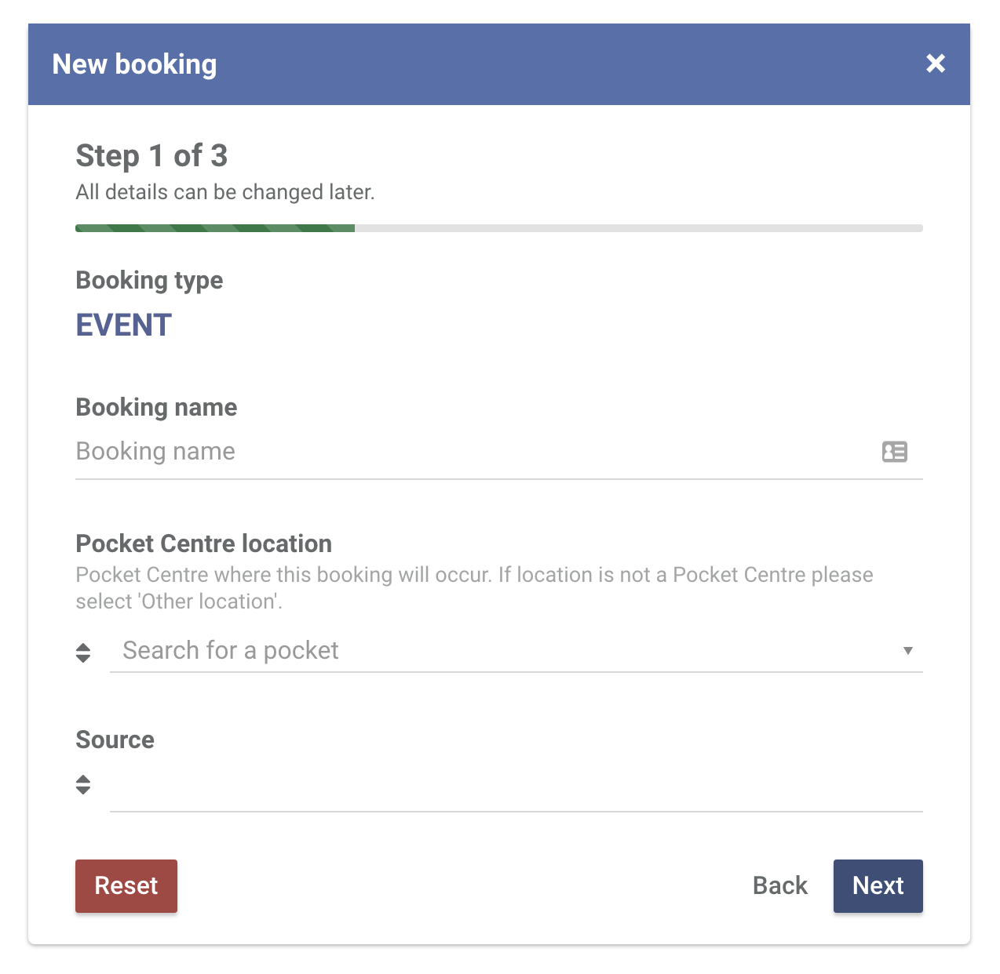
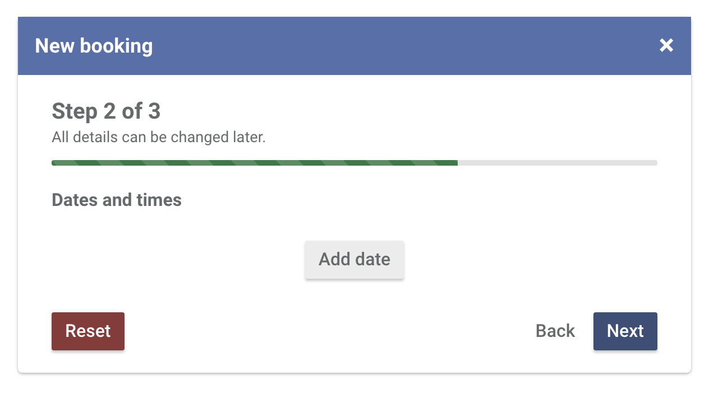
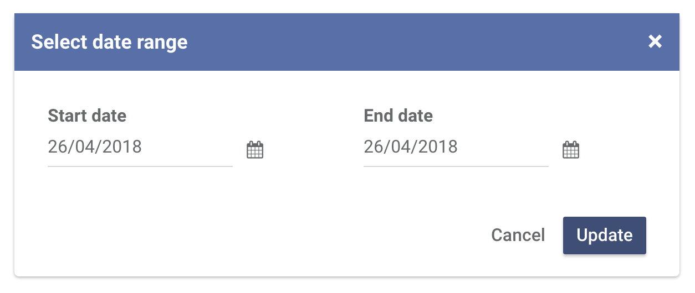
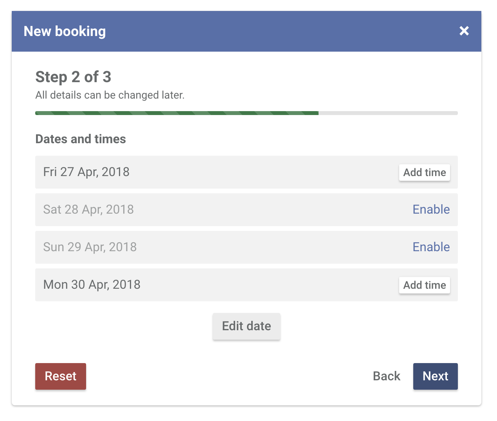
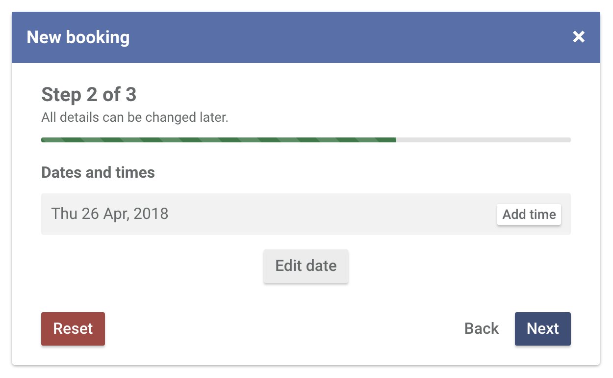
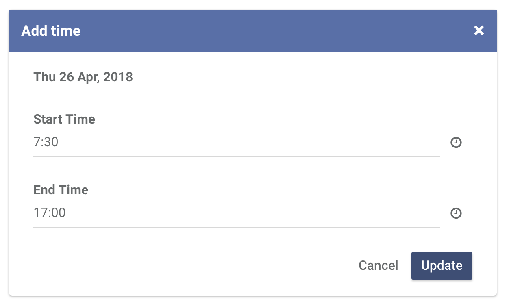
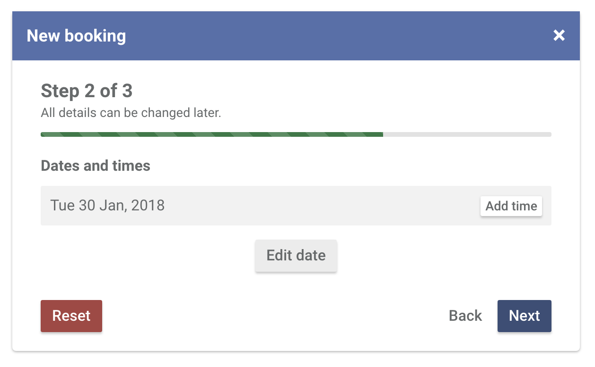
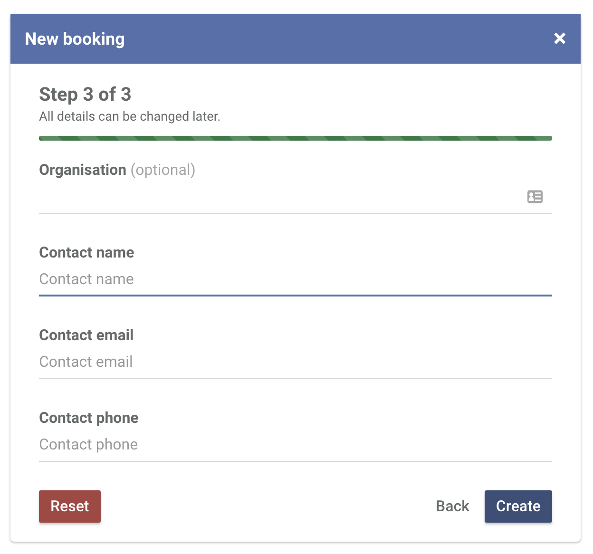

Creating a clinical booking
-
To create a clinical booking
Head over to the Bookings section and click New booking.
Click MEETING booking type.

-
Fill out basic information about the booking
Booking name is a way to identify a certain booking. This name is only used within Central.
Unless the booking is happening outside of your Pocket Centre, select your own Pocket Centre as the location. Click Next.
 -
Click Add date to select a date range.
If it's a single day event, use the same start and end date. Otherwise, click the calendar icons to specify your start and end dates. Click Update.
If you specify a date range that includes the weekend, they will be disabled by default. If your booking does not include the weekend, leave it as it is. Otherwise, click Enable so you can specify times.
Click Add time to specify a time on the dates you have selected.
By default, 7:30 - 17:00 will be specified as the start and end time.

Make your edits and then click Update.Once all of your dates and times are specified, click Next.
 -
Fill out contact details for the booking
The booking contact refers to the person requesting (or responsible for) the booking. This is the email address that will receive the booking confirmation email.
Click Create.
 -
…and you're done!
You will now be redirected to the booking profile page where you can add rooms, add number of expected attendees, add catering information, add cost/subsidy/information and upload attachments.